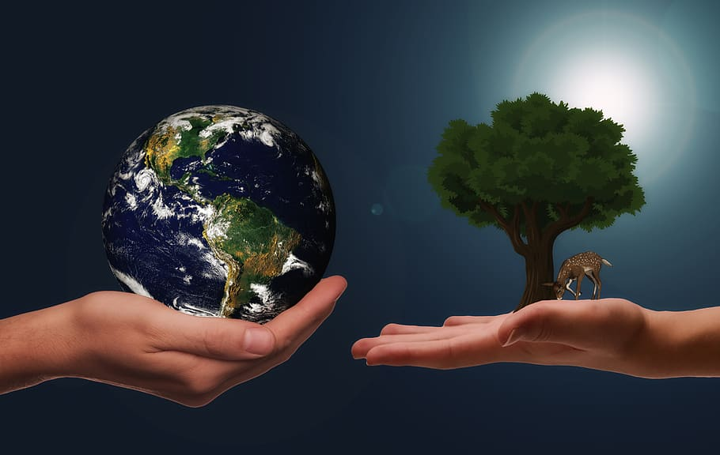
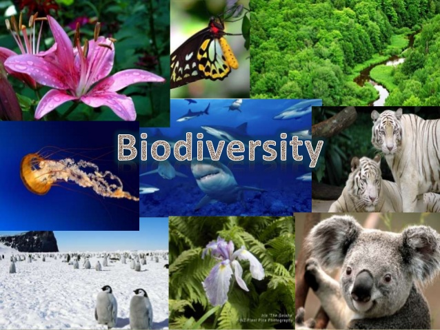
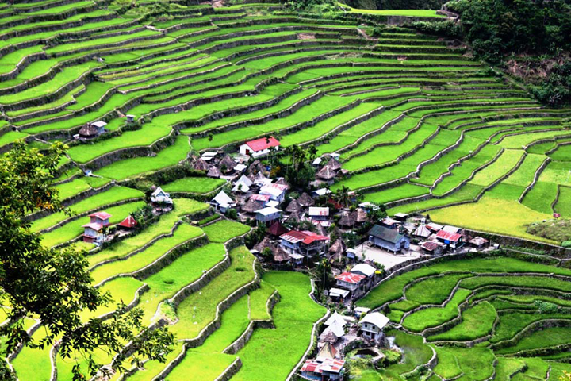
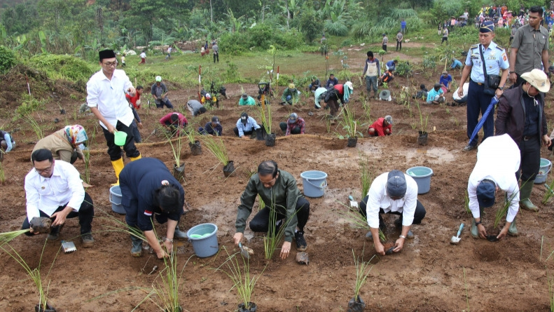
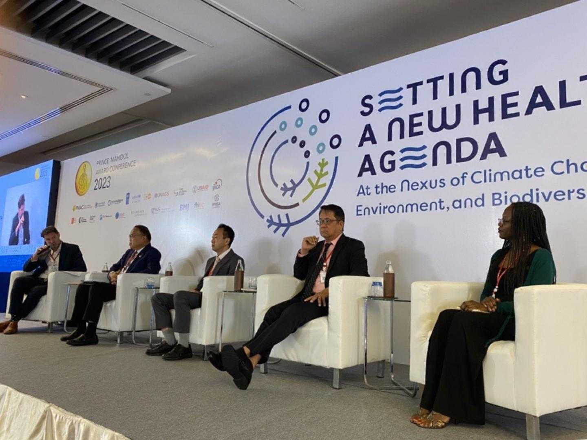

The Imperative of Environmental Preservation: Nurturing a Sustainable Tomorrow

The Earth, our home, is a marvel of interconnected ecosystems that sustain life in all its forms. As we stand at the crossroads
of environmental challenges, the significance of environmental preservation has never been more pronounced. This essay delves into
the multifaceted importance of preserving our environment, exploring the profound impact it has on biodiversity, climate regulation
human health, economic stability, and the overall well-being of our planet.
-
Biodiversity Conservation

Biodiversity, the rich tapestry of life on Earth, is fundamental to the health and
resilience of ecosystems. Each species, no matter how small, plays a unique role in maintaining ecological balance. Environmental
preservation ensures the protection of diverse habitats and species, fostering a harmonious coexistence that sustains life.
-
Climate Regulation
 The Earth's ecosystems are intricately linked to climate regulation. Forests, oceans, and other
natural environments act as carbon sinks, absorbing and storing carbon dioxide. Preserving these habitats is critical for mitigating
climate change, reducing the impact of global warming, and maintaining a stable climate for future generations.
The Earth's ecosystems are intricately linked to climate regulation. Forests, oceans, and other
natural environments act as carbon sinks, absorbing and storing carbon dioxide. Preserving these habitats is critical for mitigating
climate change, reducing the impact of global warming, and maintaining a stable climate for future generations.
-
Human Health
The quality of our environment directly influences human health. Clean air, water, and soil contribute
to the prevention of diseases, ensuring the well-being of communities worldwide. Conversely, environmental degradation, pollution,
and loss of biodiversity pose threats to public health, underlining the inextricable link between a healthy environment and human vitality.
-
Economic Stability
 Ecosystem services, the benefits derived from nature, underpin economic activities. From pollination
and soil fertility to water purification, these services are the backbone of agriculture and industry. By preserving natural habitats,
we sustain these services, promoting economic stability and long-term prosperity.
Ecosystem services, the benefits derived from nature, underpin economic activities. From pollination
and soil fertility to water purification, these services are the backbone of agriculture and industry. By preserving natural habitats,
we sustain these services, promoting economic stability and long-term prosperity.
-
Cultural and Aesthetic Value

Beyond practical considerations, the environment holds cultural and aesthetic significance.
Natural landscapes inspire art, literature, and spirituality, contributing to the cultural richness of societies. Preserving these
landscapes ensures the continuity of this intrinsic value for future generations.
-
Mitigation of Natural Disasters

Healthy ecosystems act as natural buffers against natural disasters such as floods,
hurricanes, and wildfires. Wetlands, forests, and other habitats provide resilience, reducing the impact of disasters on communities
and fostering a safer living environment.
-
Global Interconnectedness

Environmental issues, including climate change and biodiversity loss, transcend national
borders. Preserving the environment is a shared responsibility with global implications. Collaborative efforts are essential to
address the interconnected challenges facing our planet.
-
Sustainable Development
Environmental preservation is integral to the concept of sustainable development. Balancing
current needs with the ability of future generations to meet their own needs requires responsible environmental practices. Preserving
natural resources ensures a sustainable path forward.
Next: Exploration of Ways to...
Join us in our mission, and together, let's nurture a sustainable tomorrow for all.
Green Guardians - Advocates for Earth, Advocates
for Tomorrow.